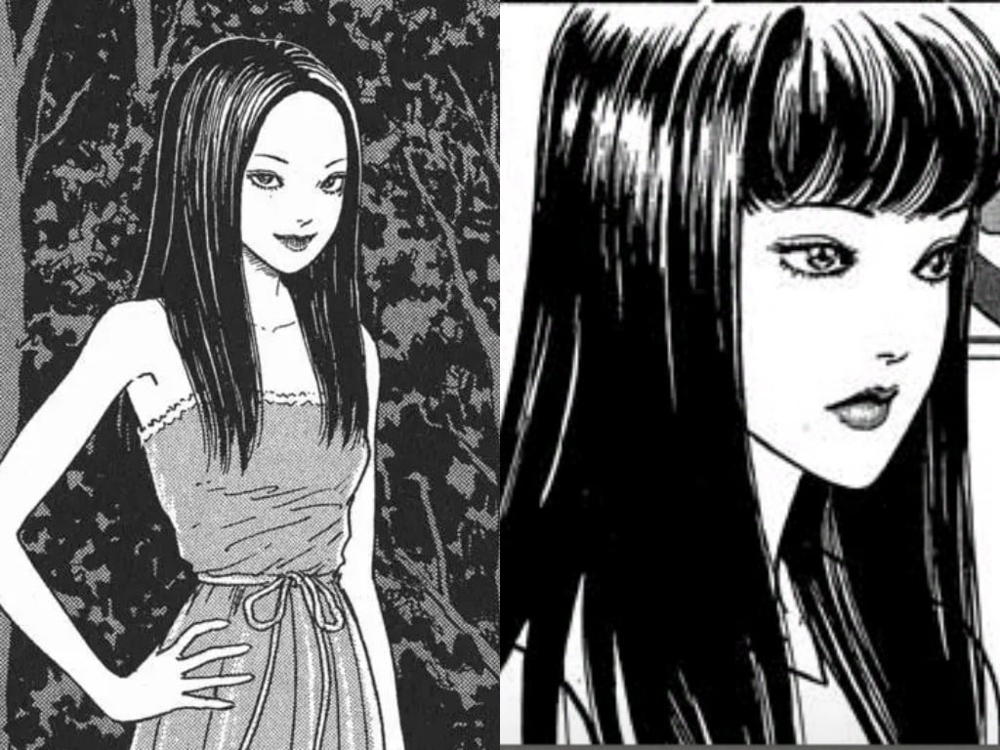

「我想創造出人們無法理解的事物。」在一次接受訪問時，日本恐怖漫畫大師，伊藤潤二（Junji Ito）一邊作畫，一邊這樣說。 當時伊藤潤二正在畫的是他2002年的作品《阿彌殼斷層之怪》。故事講述地震後某個山壁上出現許多人形洞穴。第一次出現在山頭上的主角們，在成千上萬的人形中，發現了和自己體型一模一樣的人形洞穴。為了解開謎團，他們被洞穴吸引，情不自禁地走了進去。 《阿彌殼斷層之怪》是伊藤潤二最喜歡的作品之一，集齊恐怖與怪誕為一體。神秘的斷層將詭譎的氣息發揮得淋漓盡致，故事走向更是幽閉恐懼症者的噩夢。但對於人形洞穴是如何形成的，目的又是什麼，在伊藤潤二短小而精緻的故事中，讀者也許不會找到答案。因為這可能不是故事想說的，也大概不會是讀者所關心的。 因為讀伊藤潤二的恐怖漫畫，讀者想要的也許只是沉浸在伊藤潤二打造的不可思議體驗中。
說到伊藤潤二最經典的角色，大家一定不會忘記富江！富江她是一個美到不像凡人的女子，只要是男人看到她，無一不愛上她的美貌，但最後也都會產生想要殺死她的慾望，甚至將她分屍，導致富江越繁衍越多......
《漩渦》是伊藤潤二經典的長篇漫畫，裡頭的女主角桐繪所住的「黑渦鎮」發生了一連串關於「漩渦」的詭異事件！